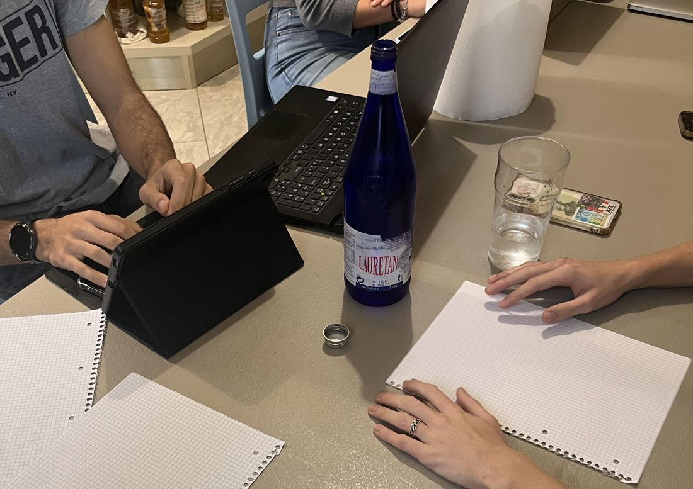
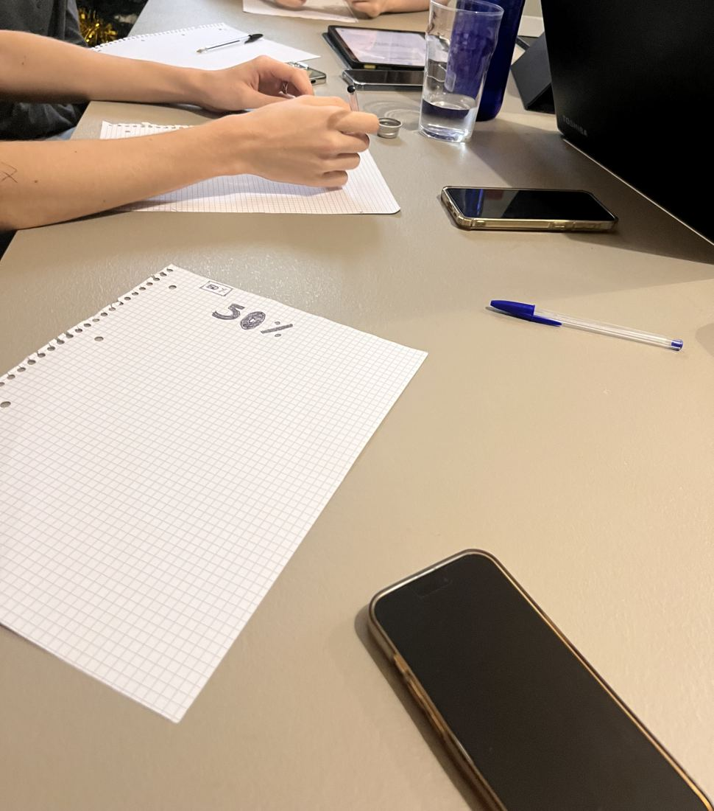
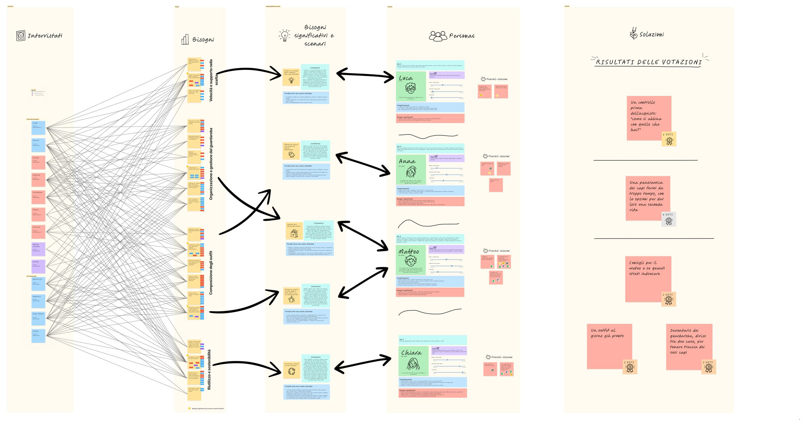
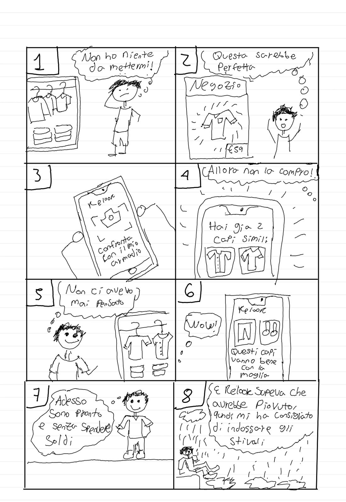

Ottobre 2026
Needfinding
Abbiamo intervistato 5 utenti target (di cui 2 estremi) e 2 esperte, e diffuso un questionario che ha raccolto 408 risposte. Ne sono usciti 7 bisogni e le prime idee.
Siamo Nexus, sei studenti del corso di Fondamenti di HCI al Politecnico di Milano. Da ottobre cerchiamo di capire perché, davanti a un armadio pieno, «non si ha niente da mettere».
La nostra risposta si chiama Relook: un’app per scegliere con i vestiti che si hanno già, comprare solo quando serve e dare una seconda vita a ciò che resta fermo.
A inizio ottobre abbiamo fatto 7 interviste (5 ragazzi e ragazze tra i 20 e i 24 anni e 2 esperte di moda) e raccolto 408 risposte a un questionario. Queste sono alcune delle frasi che ci hanno guidato.
«I do have a lot of options… I just never have anything to wear.»
«Non la trovo e non me la metto perché non la vedo.»
«Piuttosto me lo tengo, magari lo metto in un’occasione. Poi va a finire che non lo metto più.»
«Più che disagio è lo sbattimento.»
«Avere più coscienza di quello che ho.»
Dati del questionario (1–9 ottobre 2026) sul sottogruppo 18–30 anni, 187 risposte su 408. Il campione è di convenienza e sbilanciato per età e genere: lo leggiamo con cautela.
| Dicono | Fanno |
|---|---|
| Il 53% dei 18–30 ha una quantità «giusta» di capi | Il 58% sente di non avere nulla da mettere |
| Il fast fashion è il problema più grande (le esperte) | Solo l’11% considera la sostenibilità prima di comprare |
| Ha più capi del necessario e non le serve nulla | Ha comprato lo stesso top in quattro colori |
Dalle interviste, verificati col questionario (18–30).
Li abbiamo scritti così: l’utente ha bisogno di un modo per…
Dopo le interviste abbiamo fatto due focus group, uno in presenza e uno online, per mettere alla prova i bisogni e le prime idee. Poi abbiamo messo tutto su una board.




Otto vignette per raccontare il «non ho niente da mettere» dall’inizio alla fine: in negozio una maglia sembra perfetta, Relook mostra due capi simili già nell’armadio, la maglia resta lì.
Il finale: un outfit fatto solo di cose già sue e gli stivali giusti, perché Relook sapeva che avrebbe piovuto.
Apri il PDFOttobre 2026
Abbiamo intervistato 5 utenti target (di cui 2 estremi) e 2 esperte, e diffuso un questionario che ha raccolto 408 risposte. Ne sono usciti 7 bisogni e le prime idee.
Ottobre 2026
Due focus group, quattro personas con i loro scenari, brainstorming e votazione delle soluzioni. Qui Relook ha preso nome e value proposition.
Scadenza 16 novembre 2026 In corso
Tre task con HTA e TDH, lo storyboard a fumetto e due prototipi low-fidelity: un’app mobile e un’esperienza per occhiali see-through.
Nexus: sei studenti. Ogni intervista l’ha condotta uno di noi, con uno o due compagni a osservare e prendere appunti.